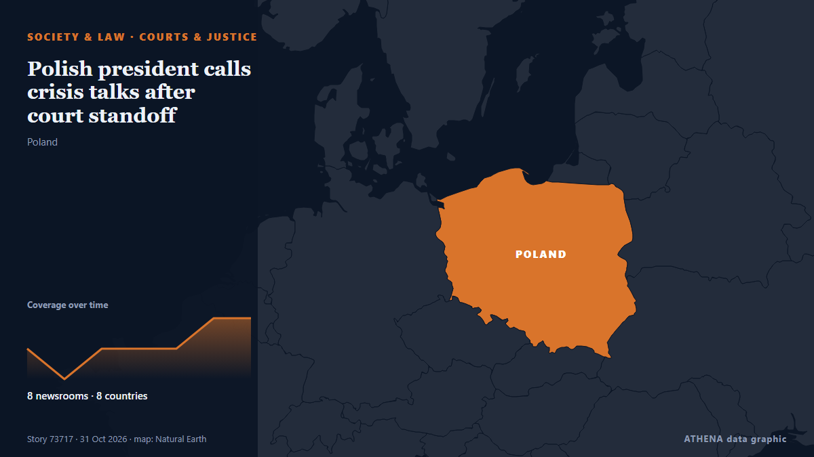

المحاكم والقضاء
| 18 أكتوبر | 0 |
|---|---|
| 19 أكتوبر | 1 |
| 20 أكتوبر | 0 |
| 21 أكتوبر | 0 |
| 22 أكتوبر | 0 |
| 23 أكتوبر | 1 |
| 24 أكتوبر | 0 |
| 25 أكتوبر | 0 |
| 26 أكتوبر | 1 |
| 27 أكتوبر | 5 |
| 28 أكتوبر | 5 |
| 29 أكتوبر | 3 |
| 30 أكتوبر | 5 |
| 31 أكتوبر | 2 |
تُعرض العناوين بالإنجليزية كما نُشرت.

Polish president calls crisis talks after court standoff
Karol Nawrocki cut short a trip to Senegal and returned to Warsaw. من Euractiv
Iran court sentences award-winning filmmaker Jafar Panahi to 5 years in prison
The 66-year-old won the top prize in the 2025 Cannes film festival for It Was Just An Accident. من The Straits Times
Judge opens East Potomac Park probe into potential DOJ misconduct
A federal judge has opened an investigation into concerns that the Trump administration lied to her in the ongoing legal battle over President Trump’s desire to redevelop East Potomac Golf Links. من The Hill
French shooting suspect deliberately targeted Muslims and Africans, says prosecutor
A man suspected of a gun attack in the Paris suburbs last week, killing one person and wounding seven including a child, has admitted to "targeting individuals who appeared to be Muslim or African,"… من The Local France
Mushroom killer Erin Patterson emotionless as appeal dismissed
Mushroom killer Erin Patterson is likely to die behind bars after Victoria’s Court of Appeal quashed her bid to overturn her triple murder conviction. من Sydney Morning Herald
European Commission takes in €8 bln from frozen Russian assets since 2024 — Euroclear
The latest tranche of €1.4 billion was transferred to the EC in August. من TASS (English)
Bayer wins Roundup cancer trial after Supreme Court ruling
The weedkiller Roundup has been accused of being carcinogenic to humans despite no warning on its label. من DW English
Abu Dhabi court jails 8 for life over arms supplies to Sudanese Army
Yasser Al Atta, Salah Gosh, Othman Al Zubair, five others sentenced to life imprisonment in arms trafficking, money laundering case. من Gulf News
Sheikh Hasina's Regime Change Was Planned Days Before Her Ouster: Yunus Aide
Hasina has accused the Yunus administration of allowing perpetrators of violence to escape accountability while pursuing politically motivated cases against Awami League members. من NDTV
Russell Brand denies all charges as he testifies at his rape and sex assault trial
The British actor-comedian acknowledged in a London court on Wednesday that he had been obsessed with sex as a younger man, but denied multiple charges of rape and sexual assault, saying the claims… من PBS NewsHour
Three French nationals jailed for life in Iraq for Islamic State ties
BAGHDAD, Oct 29 - Three French nationals were sentenced to life in prison in Iraq on Thursday for belonging to Islamic State, with their lawyers and French embassy representatives present at the… من The Straits Times
92-year-old US judge handling Maduro case dies
His death was confirmed by an official at the United States District Court, Southern District of New York, where he presided. من Channels TV
Trump: Judge would be held 'fully responsible' for anyone hurt on 'absolutely disgusting' East Potomac golf course
President Trump on Wednesday evening slammed U.S. من The Hill
Special counsel again seeks death penalty for ex-President Yoon over martial law declaration
SEOUL, Oct. 29 (Yonhap) -- A special counsel team on Thursday sought the death p... من Yonhap (English)
Delhi High Court rejects Neha Bora's plea against police notice to sign peace bond
HC judge, however, says that he has passed certain directions to the special executive magistrate (SEM) on providing all material to the student leader in the proceedings. من The Hindu
US judge narrows Macrons' defamation lawsuit against American podcaster
A judge in the United States has ruled that French President Emmanuel Macron and his wife, Brigitte, could continue their defamation lawsuit against the companies of the American podcaster Candace… من RFI English
Sinai Monastery Deal Nears Breakthrough with Egypt
A proposed agreement between Egypt and Saint Catherine’s Monastery in Sinai is nearing a breakthrough, with Archbishop Symeon preparing to signal his acceptance amid pending Greek court proceedings. من Greek City Times
Ambani, Adani outlets among Indian publishers contesting Modi’s privacy law
The October 6 lawsuit is the most high-profile challenge to Modi’s privacy law. من Express Tribune
Ishan Kishan ruled out of India’s 3rd T20I vs New Zealand
Dubai: Vaibhav Sooryavanshi could get another opportunity to represent India in the second T20I against New Zealand after Ishan Kishan suffered a groin niggle, batting coach Sitanshu Kotak confirmed. من Gulf News